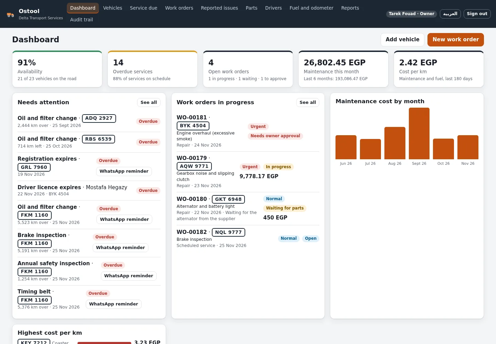
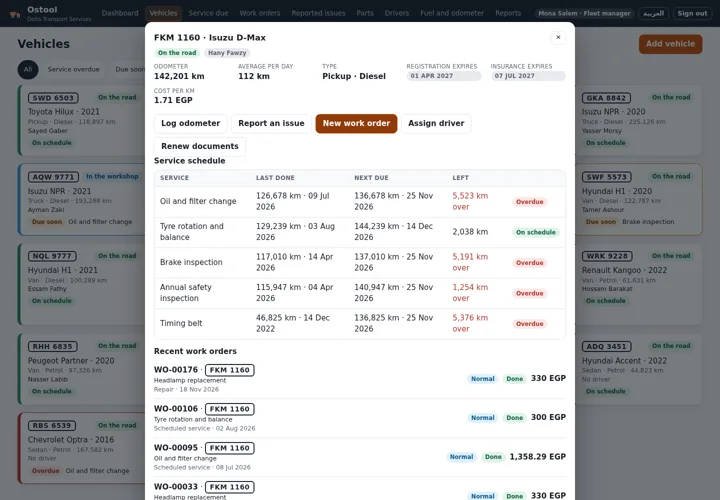
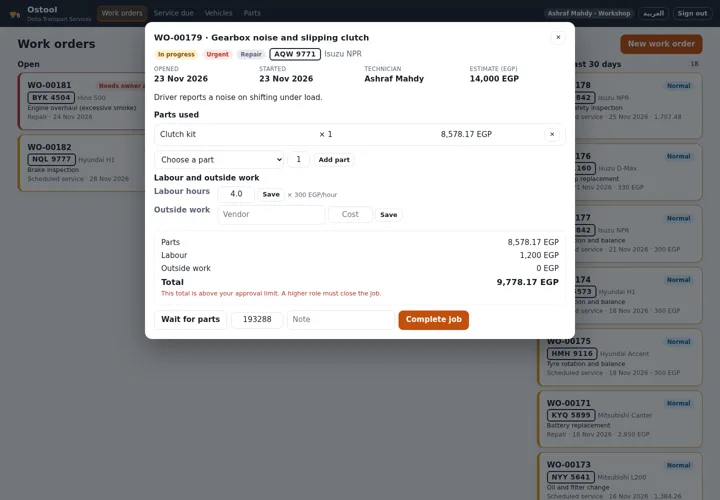
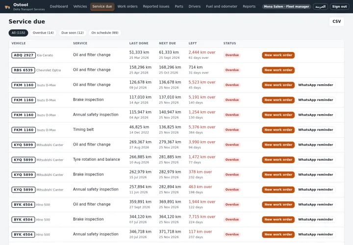
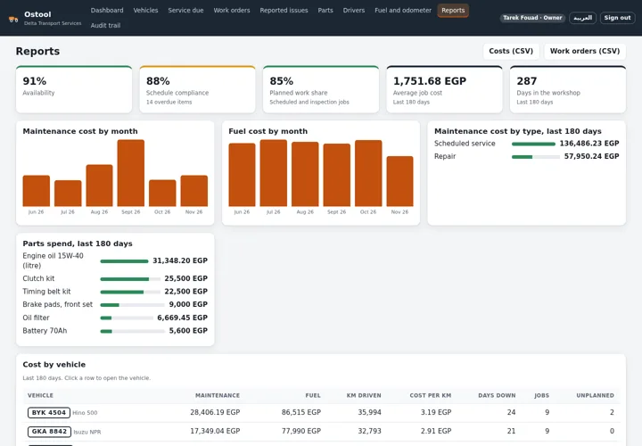
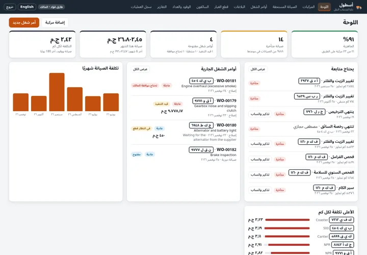
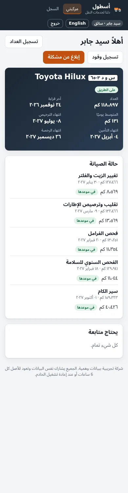

PORTFOLIO DEMO / BUILT / LIVE DEMO
Ostool
Every service on schedule. Every repair cost traced to a vehicle.

ACTUAL BUILDOstool · Owner dashboard. Fictional transport company and demo data.
The problem
A transport company runs a fleet of vans, pickups and trucks on a notebook, a spreadsheet and drivers' phone calls. Nobody knows which services are overdue until a vehicle breaks down, spare parts run out in the middle of a job, and repair costs cannot be tied back to a vehicle.
What was built
A fleet maintenance management system with four roles. Each vehicle follows service plans by kilometres or months, whichever comes first, and is shown as on schedule, soon or overdue. Work orders move from open to in progress, waiting for parts and done. Parts used on a job leave stock at once and return if the line is removed. Jobs above a role's limit wait for a higher role, and the owner approves the largest ones. Drivers report problems on their own vehicle, and the manager turns a report into a work order. Odometer and fuel entries are validated. Registration, insurance, licence, service and stock reminders open a WhatsApp message with the details filled in. Reports show availability, compliance, cost per km, parts spend and cost by vehicle, with CSV export. The interface works in Arabic (right to left) and English, and on a phone.
What changes for the company
Before. Service dates live in one person's head. Parts are counted when someone remembers. A repair cost is a note on a receipt. Licence and insurance expiry is noticed at a checkpoint.
After. The same rules decide what is overdue. Every job shows its parts, labour and outside work, with a total checked against approval limits. Stock follows the work. Expiring documents and overdue services are one short list, and a reminder is one tap.
Why it matters to a fleet owner
Missed services and expired documents cost days off the road and fines. This system turns them into a daily list and makes the cost per vehicle visible. These are the situations the demo is built to show. They are not measured results from a real company.
The approach
No framework: plain JavaScript pages, one serverless API function and one logic file that holds every rule (schedules, odometer checks, work-order flow, stock, approval limits, licence rules, reminders, reports, privacy). The same file runs in the API, the browser and the tests. Permissions are enforced on the server, so a driver never receives other drivers' data or any costs. The seed history is produced by running the same rules day by day, so the demo records always add up.
The result
A live demo anyone can open. Sign in as owner (PIN 1111), manager (2222), workshop (3333) or driver (4444); the PINs are on the sign-in screen. The sample company has 24 vehicles, 18 drivers, 18 stocked parts and about 180 work orders across 6 months. Verification: 26 business-rule tests and 136 browser and API checks run against the live site, covering forged tokens, malformed bodies, every role's permissions, data each role must not see, the work-order flow, hostile text shown as plain text, Arabic RTL and phone layouts.
Evidence & production limits
One shared demo workspace: everyone sees and changes the same data. State is kept in server memory only, so it resets about every six hours and whenever the server instance restarts. Sign-in is a PIN printed on the sign-in screen, so it must not hold real vehicle, driver or cost data. The company, plates, drivers, phone numbers and amounts are fictional.
Known gaps: no database, no real authentication or password reset, the odometer is typed in by hand with no GPS or telematics, reminders open WhatsApp but nothing is sent automatically, no procurement, accounting or e-invoicing, approval limits and reminder windows are demo settings, one company and one currency. Direction, scope and delivery: Nada Gamal.
Next chapter
Real accounts, a database, telematics or automatic odometer capture, supplier orders, accounting export and automatic reminders by WhatsApp or SMS would be the next implementation steps.
Inside the build
Open any preview to see the full capture. Captures show demonstration content, not evidence of client use.





